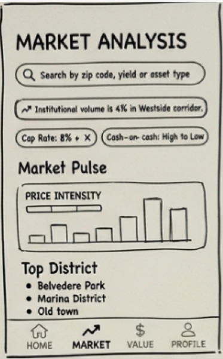
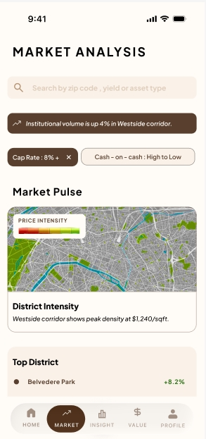

Dual-Mode Real Estate
04. Aura Estate
Aura Estate is a refined mobile real estate platform built around a hard constraint: investors and first-time buyers are looking at the same listings for completely different reasons, and forcing them through one generic flow serves neither well. This case study covers the research behind that split, and the structural choices that came out of it.
View Full Case Study on Behance01 / Context
When one flow serves no one well
Aura Estate is a refined mobile real estate platform that simplifies property discovery through two tailored user journeys. It balances investor-focused financial insight with an aspirational, lifestyle-driven experience for first-time buyers - designed with a warm, minimalist palette of deep oak, sand, and cream linen as a deliberate alternative to cluttered, traditional real estate interfaces.
Benchmarking Aura Estate against MagicBricks and NoBroker made the gap clear: both competitors default to a "one size fits all" interface. Neither gives investors real ROI tooling, and neither gives first-time buyers a guided, low-friction path - cognitive load on both platforms came out "extremely high" to "moderate" at best.
The question wasn't whether to build two apps or one app - it was whether a single shared entry point could set the right context immediately, then branch into two genuinely different experiences without feeling disjointed.
02 / Research
Two personas, two completely different jobs to be done
Research centred on building out two full personas through an affinity diagram - clustering needs into Financial Performance, Portfolio Management, and Market Intelligence for investors, versus Lifestyle Discovery, Emotional Connection, and Educational Guidance for first-time buyers - then validating each against a real bio and a clear set of pain points.
A seasoned real estate professional managing high-value assets. He prioritises market data, financial forecasting, and operational efficiency over lifestyle aesthetics.
Pain Points
- Analysis paralysis
- Data lag
- Administrative friction
Needs
- Predictive insights
- Real-time returns
- Secure document storage
A young professional transitioning from renting to owning. She wants an emotional connection to a space, but is intimidated by the complex financial and legal steps involved.
Pain Points
- Goal uncertainty
- Poor discoverability
- Buyer confusion
Needs
- Clean cost breakdowns
- Lifestyle-based search
- A guided journey
03 / Information Architecture
One door, two structures
Both modes share a single onboarding and persona toggle, then branch into completely independent navigation - five sections each, built around what that persona actually needs to see first.
Investor Mode
Buyer Mode
04 / Journey Map
Two journeys, side by side
Mapping both personas through the same four stages - Discovery, Search, Evaluation, Action - made the divergence concrete, and gave each feature in the IA above a specific moment it needed to exist for.
| Stage | Discovery | Search | Evaluation | Action |
|---|---|---|---|---|
| Marcus · Investor | ||||
| Goal | Find high-yield assets to grow his portfolio | Filter by data, not by photos | Verify ROI and legal docs in the vault | Place a high-stakes offer faster |
| Emotion | Calculating | Focused | Cautious | Decisive |
| Aura feature | Investor mode toggle | ROI stats & KPI filters | Digital document vault | One-tap priority offer |
| Maya · First-Time Buyer | ||||
| Goal | Find a "sanctuary" to start her own life | Browse by lifestyle, not specs | Understand monthly costs and next steps | Connect to an agent with confidence |
| Emotion | Excited | Overwhelmed | Relieved | Empowered |
| Aura feature | Lifestyle "vibe" tags | Sanctuary-first UI | Monthly affordability guide | Guided agent chat |
05 / Wireframes → Hi-Fi
From rough boxes to the final flow
Low-Fi Wireframe

The low-fi version was a rough sketch of the Market Analysis experience: simple blocks for search, sentiment, and top districts, built to validate the information hierarchy before visuals were added. The hi-fi screen refines that structure into a polished Market Analysis panel with clean filters, a map-based Market Pulse, and clearer district performance detail for an investor-ready overview.
Market Analysis

06 / Design Decisions
Why each key screen looks the way it does

This section highlights key metrics upfront-total assets and annual yield-for an instant performance snapshot, while the “Top Performer” feature reinforces pride and success through premium imagery and appreciation data.

This section combines an “Aggressive” Sentiment Gauge with a 12-month forecast, letting investors quickly align their risk appetite with real-time institutional trends.

The Inbox screen acts as the communication nerve center for a first-time buyer, centralizing all interactions with agents, sellers, and advisors into a single, organized feed. It eliminates the “clutter” and “slowness” of traditional email by providing instant access to property inquiries, negotiation updates, and direct messaging with your dedicated Strategist. This streamlined interface ensures that critical updates-like a price change or a viewing confirmation-are never missed during the high-pressure buying process.
07 / Screen Highlights
Figma prototypes created


08 / Outcomes